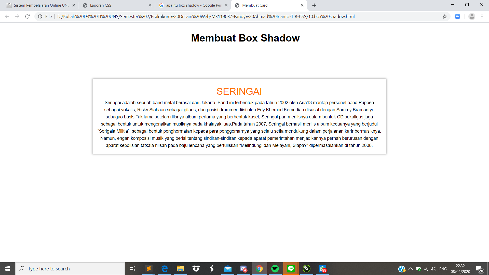

Box Shadow
Pendahuluan
Property box-shadow hampir sama dengan text-shadow, hanya saja property ini digunakan untuk memberikan Shadow pada suatu element. Dalam artian Box shadow merupakan property yang memungkinkan untuk membuat sebuah efek bayangan pada sebuah element. Untuk membuatnya harus men-set 4 value.
Codingan
<!DOCTYPE html>
<html lang="id">
<head>
<meta charset="utf-8">
<meta name="viewport" content="width=device-width, initial-scale=1.0">
<title>Membuat Card</title>
<link href="shadow-style.css" rel="stylesheet" type="text/css">
</head>
<body><center>
<h1>Membuat Box Shadow</h1>
<div class="card">
<div class="card-content">
<h2 class="card-title">SERINGAI</h2>
<p>
Seringai adalah sebuah band metal berasal dari Jakarta. Band ini
terbentuk pada tahun 2002 oleh Aria13 mantap personel band Puppen
sebagai vokalis, Ricky Siahaan sebagai gitaris, dan posisi drummer
diisi oleh Edy Khemod.Kemudian disusul dengan Sammy Bramantyo sebagao
basis.Tak lama setelah rilisnya album pertama yang berbentuk kaset,
Seringai pun merilisnya dalam bentuk CD sekaligus juga sebagai bentuk
untuk mengenalkan musiknya pada khalayak luas.Pada tahun 2007,
Seringai berhasil merilis album keduanya yang berjudul “Serigala Militia”,
sebagai bentuk penghormatan kepada para penggemarnya yang selalu setia
mendukung dalam perjalanan karir bermusiknya. Namun, engan komposisi
musik yang berisi tentang sindiran-sindiran kepada aparat pemerintahan
menjadikannya pernah berurusan dengan aparat kepolisian tatkala rilisan
pada baju lencana yang bertuliskan “Melindungi dan Melayani, Siapa?"
dipermasalahkan di tahun 2008.
</p>
</div>
</div>
</center>
</body>
</html>
Kode CSS Eksternal
*{
margin: 0;
padding: 0;
font-family: 'Roboto', sans-serif;
}
h1{
padding:30px 50px 10px 600px;
}
.card{
width: 60%;
height:auto;
margin: 100px 30px 40px 290px;
background-color: #FFFFFF;
border: solid thin #DDDDDD;
box-shadow: 0 0 6px #999999;
float: left;
}
.card .card-title{
font-size: 30px;
font-weight: normal;
color: #FF6D00;
}
.card .card-content{
padding: 15px;
font-size: 14px;
line-height: 1.6;
}
Hasil Screenshot

Analisis
Pada percobaan membuat box shadow kali ini saya memperbesar ukuran dari box shadow yang telah ada di modul dengan menambahkan atribut fitur width dan ukuran margin pada css. Pada card yang kita telah buat terlihat adanya bayangan yang menggelilingi box itu sendiri atau disebut shadow.